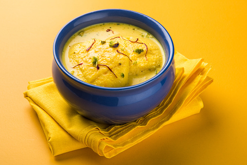

Ras malai Dessert

Traditional sweets are usually prepared during festive occasions in our home. One of the greatest culinary creations that has won the hearts of millions the world over.
Ras malai is milk based dessert prepared with freshly prepared chhena
aka cottage cheese balls.Chhena balls that have been cooked in sugar
syrup are gently squeezed off the sugar syrup and further immersed in
saffron flavored sweetened thick milk to cook till soft. One of the most
elegant Indian dessert delicacy with sweet and fragrant flavors!